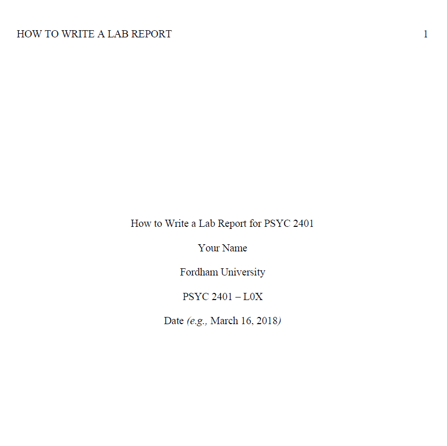

Lab 2: Presentation and Lab Reports
Fabio Setti
PSYC 2401 Lab
Fall 2023
So, what are we up to today?
Last time I taught this lab, a good deal of students either asked or suggested to go over what I expect for presentations and lab reports in more detail…
Presentation
Presentation Sign-up
For presentations sign-ups, you will have to pick a date to present on and an article to present.
So, who goes first? Let’s let the button pick for us!
For presentations sign-ups, you will have to pick a date to present on and an article to present.
So, who goes first? Let’s let the button pick for us!
Presentation Grading Rubric
The student presents the topic and background literature in enough detail. The rationale as to why the researcher are conducting the experiment is clearly laid out. (10pts)
The experimental design, the variables being measured, and the way in which the variables are measured are presented in a clear but succinct way. (15pts)
The student understands the results and the statistics involved with the results and is able to clearly convey this information to the audience. (15pts)
The results are quickly summarized, and the main discussion points (i.e., possible explanation of results, implications, limitations) are identified and presented. (10pts)
The student delivers the presentation in an engaging way, without using any notes. Some notes are fine, but clearly reading from notes will result in high point deduction. (10pts)
Introduction
In this part of the presentation, you should focus on the following points of your article:
- Background about the topic: What is the topic of the article? What research has been done on it?
- Gaps in the literature: What research is missing? What questions has not been explored?
- The current study: Why is the current study being done? What are the variables involved (IV and DV)? What are the hypotheses (if any)?
Method
Usually, the method section is divided into the following subsections:
- Participants: What is the demographic composition of the sample? How many participants are there?
- Materials: How were the variables measured? What are the values of the measured variable (e.g., “the possible values of the IV ranged from 0 to 100”)?
- Procedure: What was the experimental design? How did the experiment take place?
Results
- Remember that this is supposed to be a short presentation, so you should only report the most important statistics (i.e., the ones directly related to the main hypotheses).
- Make use of figures (e.g., bar charts) as much as possible . This always makes it so much easier to understand the results. Tables can also help.
- Explain what the statistics mean in plain English, do not just say “this results was significant”. Rather, say something like “so, this statistic tells use that group A had significantly better recall than group B.”
Discussion
The discussion is usually where the researchers briefly summarize the results and provide personal opinions about the study. The important points to identify are:
- Results Summary: Briefly recap the main findings.
- Interpretation and Implications: Where the main hypotheses supported? Why were certain results observed? What are the practical implications of the results?
- Limitations: What are some possible issues with the study?
- Future directions: What research should be done next?
Delivery
How you deliver your presentation is also important. I understand that delivery is hard for some, but you are going to be doing this more and more moving on, so you should take every chance to practice getting more comfortable.
Some personal (others may disagree) advice is:
- Do not prepare scripts or read from your notes . Just avoiding doing this should be enough for a good Delivery grade.
- Keep your slides low in word count. Most of the content should be conveyed orally.
- Try to convey to the audience that you are interested in your topic.
- It is ok to pause to gather your thoughts or read notes in between slides.
Again, I know this is really hard for some, but presenting is a very important skill in our field.
A note on the Presentation Structure
The grading rubric follows the classical scientific journal article structure (i.e., Introduction, Method, etc…).
Remember that this structure exists because it works well. When you create your presentation, make sure that your slides follow this structure:
DOs and DON’Ts
Finally, Some general advice on what to do and not do when presenting a journal article.
DOs
- Use lots of figures and tables (if you can).
- Have slides with low word count. (40 words tops?)
- Make use of animations to present content sequentially.
-
Some journal articles have multiple experiments; follow this structure:
Method 1 → results 1 → method 2 → results 2.
DON’Ts
- Only use text.
-
Have too much text on a single slide.
-
Present the whole slide at once.
-
Do not present multiple experiments this way:
Method 1 → Method 2 → results 1 → results 2.
{kind=link}
Any Questions? 🤔

Lab Reports
Lab report structure and Formatting
Your full lab report must include the following sections:
- Title page: This should be the 1st page of your lab report.
- Abstract: This should be the 2st page of your lab report.
- Introduction: This should be the 3st page of your lab report. (suggested length: 1 to 1.5 pages)
- Method: This section should include “participants”, “materials”, and “procedure” as 3 subsections. (suggested length: 1 page)
- Results: Where you report you data analyses. (suggested length: 0.5 pages)
- Discussion: Interpretation of findings, limitations, future directions. (suggested length: 1 page)
- References: Where you include the full references of your in-text citations.
Lab reports must follow these formatting conventions:
- Times New Roman
- 12 pt font
- 3-4 pages long (not including Reference section)
- double-spaced
- with 1-inch margins
- page numbers on top right-hand corner
- running head on top left-hand corner
- Section Headings must follow APA headings conventions
Title Page
- Running head: The running head should be at the top left of every page of your lab report. It is fully capitalized, does not go over 50 characters, and should be fully included the title .
- page number: Top right of every page.
- Title: Title of your lab report. It needs to be exactly at the center of the page. Capitalize major words.
- Name: Your name.
- Institution: This is always going to be Fordham University in our case.
- Class: PSYC 2401 and your section.
- Date: For example, “March 16, 2018”.

Abstract
According to the APA publication manual, “an abstract is a brief, comprehensive summary of the contents of the paper”. Here’s an example of an abstract:
Intrinsic motivation (IM) refers to engaging in an activity for the pleasure inherent in the activity. The present article presents a tripartite model of IM consisting of IM to know (i.e., engaging in an activity to experience pleasure while learning and trying to understand something new), IM toward accomplishment (i.e., engaging in an activity for the pleasure experienced when attempting task mastery), and IM to experience stimulation (i.e., engaging in an activity for feelings of sensory pleasure). The tripartite model of IM posits that each type of IM can result from task, situational, and personality determinants and can lead to specific types of cognitive, affective, and behavioral outcomes. The purpose of this research was to test some predictions derived from this model. Across 4 studies (Study 1: N = 331; Study 2: N = 113; Study 3: N = 58; Study 4: N = 135), the 3 types of IM as well as potential determinants and consequences were assessed. Results revealed that experiencing one type of IM over the others depends in part on people’s personality styles. Also, each type of IM was found to predict specific outcomes (i.e., affective states and behavioral choices). The implications of the tripartite model of IM for motivation research are discussed. (Carbonneau et al., 2012, abstract)
Your abstracts should be no longer than 250 words and should include these points about the lab report:
- Background about the topic: This is essentially a summary of your introduction.
- Purpose/Hypotheses: Mention what the purpose of the study was or the hypotheses (if any).
- Method: Include some information about the sample composition and the method.
- Results: A very brief snippet of the results; in the case of your lab report, include statistics here (e.g., t-tests, ANOVAs).
- Discussion: Briefly mention the most important implication/s of the results.
-
as a general rule, spend 1 to 3 sentences for each of the points above
:::
Introduction
The introduction serves many purpose. A good introduction should hit all of the following points:
- Introduce the topic: What is the general topic that the report is focusing on?
- Background literature: What research has been done on topic?
- Why we are running the experiment: The reason as to why the experiment we are running is important/interesting. This part has to logically stem from the background literature that you present!
- variables and hypotheses: What are the hypotheses (may be 1 or more)? What are the variables of interest?
For your introduction, you must cite at least 3 sources.

Much Like a funnel, your introduction should start very general (i.e., the general topic), and progressively get more specific and targeted (i.e., up until the specific hypotheses).
Method
The Method section is divided in 3 subsections:
- Participants: Demographics and sample composition (e.g., number of participants, mean age and standard deviation, gender, etc…).
- Materials: Usually, here you mention what questionnaires were used to measure the variables. In the case of the lab reports, mention how the variables were measured (e.g., response times were measured in milliseconds).
- Procedure: detail how the lab experiment worked. Usually Coglab has a good summary of this.
Results
In the results section, you should present the statistics that test your hypotheses. Here’s a short example:
A two-way ANOVA was performed to evaluate the effects of gender and college major on students’ Research Methods exam scores. The means and standard deviations for students’ Research Methods exam scores were M = 81.6 and SD = 10.2 respectively. The results indicated no significant main effect for gender, F(1, 54) = 0.09, p = .771; a significant main effect for major, F(2, 54) = 10.52, p < .001; and no significant interaction between gender and major, F(2, 54) = 0.23, p = .795. (taken from ezspss.com)
- Do not interpret the results, simply state them. The interpretation comes later.
- Rember to include descriptive statistics (mean and standard deviaiton) of your variables at the beginning of your result section.
- “F”, “p”, “M” and “SD”, as well as any abbreviation that refers to a statistic must be italicized.
- Depending on what analyses you are running, there will be different APA guidelines for reporting results. Either refer to your PSYC 2000 lab slide or consult this document.
Discussion
In the discussion, you should sum up your findings, interpret them, and critically evaluate the experiment:
- Interpret the statistics presented in the Results section. Were the hypotheses supported?
- Why do you think the results were observed?
- What were some limitations of the experiment?
- What could or should be done in the future?
References

Not much to say here, so just a few quick notes:
- References go in alphabetical order.
- Every reference has a hanging indent
- For the purpose of the lab reports, feel free to ignore the DOIs at the end of the references.
Any Questions? 🤔
…And Class is over!🙃

Lab 2: Presentation and Lab Reports